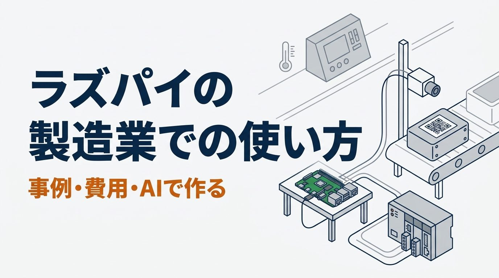
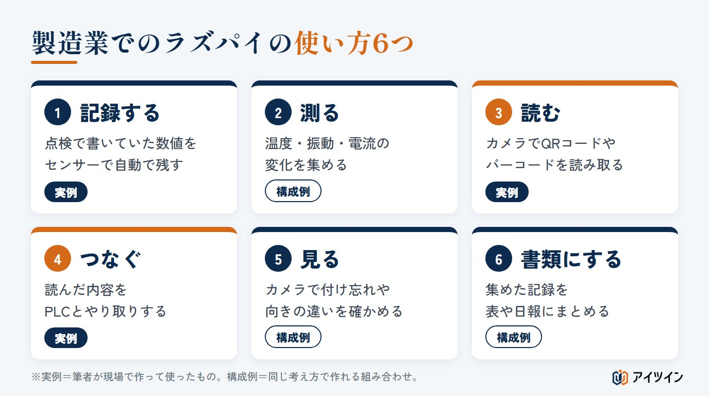
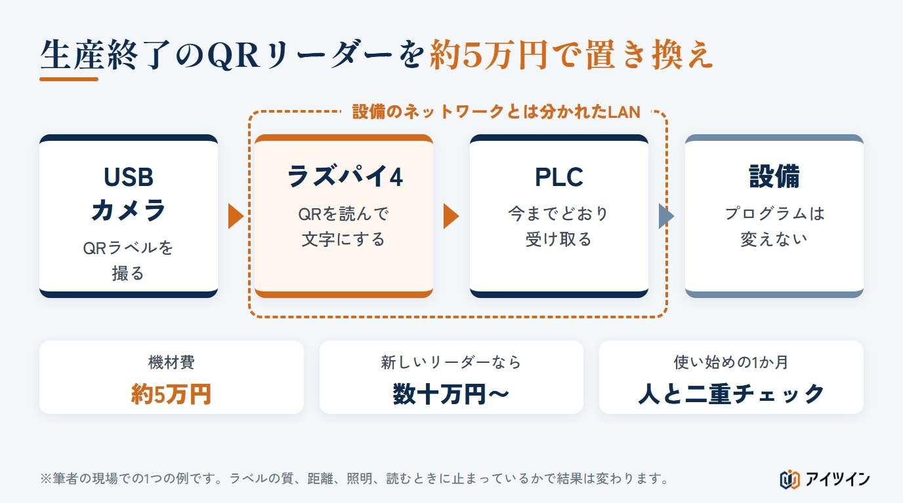
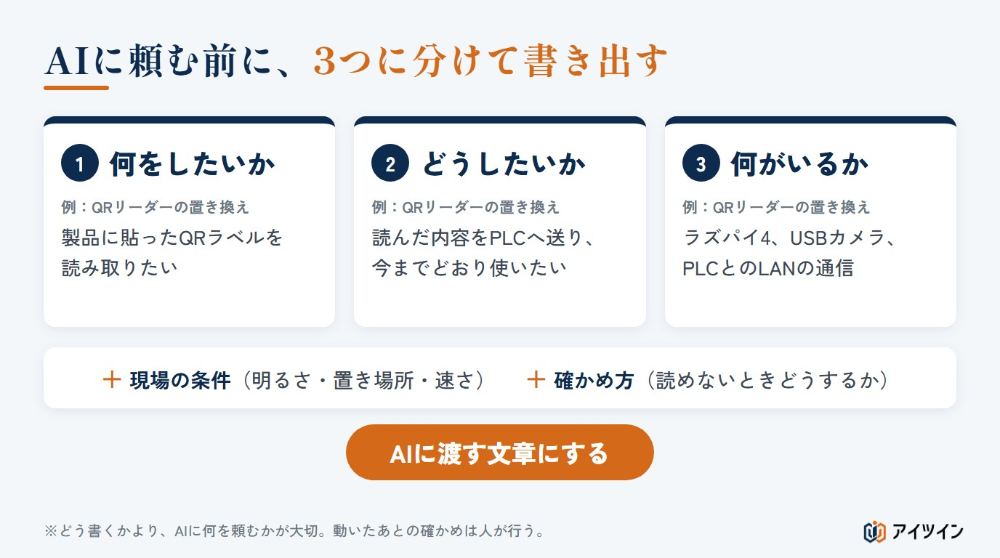

「ラズパイで何かできそうだが、工場で使って大丈夫なのか分からない」「社内にプログラムを書ける人がいない」。製造業でラズパイ（ラズベリーパイ）を使おうとすると、多くの方がこの2つで止まってしまいます。
本記事では、製造業でのラズパイの使い方を、事例で整理します。点検の記録、温度や振動の測定、QRコードの読み取り、PLCとのデータのやり取りなど6つの使い方と、費用の比べ方、製造現場で使うときの注意点をまとめました。後半では、プログラムを書いたことがない筆者が、AIを使って現場の仕組みを作ってきた進め方もご紹介します。
この記事でわかること
- ラズパイとPythonが、製造業で使われるようになった理由
- 製造業でのラズパイの使い方6つと、「困っている一点」から考える捉え方
- 生産終了のQRリーダーを、約5万円の機材で置き換えた事例
- 市販の機器との費用の比べ方（計算ツールつき）と、製造現場での注意点
- プログラムを書かずに、AIで仕組みを作る進め方
ラズパイとPythonとは｜製造業で使われる理由
ラズパイは、手のひらにのる小さなコンピューター
ラズパイ（ラズベリーパイ）は、コンピューター教育を広めるためにイギリスで設立された財団の活動から生まれた、手のひらにのる大きさのコンピューターです。今は、設計・製造・販売を会社が担い、財団は教育の活動を続けています。画面やキーボードをつなげば、パソコンのように使えます。本体の値段は、メモリの量と時期で変わります。2026年はメモリの値上がりで値上げが続き、メモリの少ないモデルは約1万円から、多いモデルは2万〜3万円台になっています。電源、ケース、SDカードなどは別に必要です。大きな特徴は、センサーやカメラ、ほかの機器を直接つなげることです。温度を測る、ボタンが押されたことを知る、ランプを点けるといったことを、小さな箱の中で行えます。
Pythonは、読みやすく、部品が多いプログラムの言葉
Python（パイソン）は、コンピューターに指示を出すためのプログラムの言葉の一つです。書き方が読みやすく、カメラの画像を扱う、表計算のファイルを作る、ほかの機器と通信するといった「部品」が数多く公開されています。ラズパイとの相性がよく、ラズパイで何かを作るときの定番になっています。
製造業で使われる3つの理由｜安い・つなげる・AIで作れる
1つ目は、安いことです。市販の専用機器なら数十万円かかる仕組みを、数万円の機材で作れる場合があります。2つ目は、つなげることです。古い設備にセンサーを後から付けたり、カメラやPLC（設備を動かす制御の機器）とデータをやり取りしたりできます。3つ目は、AIでプログラムを作れるようになったことです。以前は「プログラムを書ける人がいない」ことが最大の壁でしたが、今は、やりたいことを言葉で伝えれば、AIがプログラムを書き、手順も教えてくれます。
この章のまとめ
- ラズパイは、センサーやカメラをつなげる小さなコンピューター
- Pythonは読みやすく、ラズパイで仕組みを作るときの定番のプログラムの言葉
- 安い、つなげる、AIで作れる、の3つで製造業でも使われるようになった
製造業でのラズパイの使い方6つ
製造現場でのラズパイの使い方は、大きく6つに分けられます。下の図の「実例」は筆者が実際に作って現場で使ったもの、「構成例」は同じ考え方で作れる組み合わせです。

記録する｜点検の数値を自動で残す
毎日の点検で、人が測って紙に書いている数値を、センサーで測って自動で残します。筆者の現場では、過去に過熱のトラブルがあった制御盤の電源ユニットの近くに温度センサーを置き、毎日の点検で記録していたまわりの温度を自動で残すようにしました。部品の表面の温度か、まわりの空気の温度か、盤の中全体の温度かで値は変わるため、何を測るのかを先に決めておきます。
測る｜温度・振動・電流
設備に振動センサーや電流センサーを付け、値の変化を集めます。集めた値を波形にしてしきい値を決めれば、いつもと違う動きに早く気づけます。センサーの種類によっては、ベアリング（軸受け）の傷の兆しをつかむこともできます（考え方は「設備の故障を減らす保全の進め方」で紹介しています）。
読む・つなぐ｜QRコードを読み、PLCへ渡す
カメラでQRコードやバーコードを読み取り、その内容をPLCへ送ります。読む機器と設備をつなぐ部分をラズパイが受け持つことで、設備側の使い方を変えずに機器を置き換えられます。次の章で詳しく紹介します。
見る・書類にする｜カメラの外観確認と、記録の表
決まった位置に置かれた物をカメラで撮り、付け忘れや向きの違いを見分けます。ただし、良品と不良品の見分けを覚えさせる画像（教師データ）をそろえるところが最初の壁になります。また、集めた記録を表計算のファイルにまとめる、日報の形に整えるといった書類の作業も、Pythonの得意な分野です。
この章のまとめ
- 使い方は、記録する・測る・読む・つなぐ・見る・書類にするの6つ
- 点検の記録とQRコードの読み取り・PLCとの連携は、筆者が現場で作った実例
- カメラの外観確認は、教師データをそろえるところが最初の壁になる
「全部」ではなく「困っている一点」から考える
ラズパイを使うときに大切なのは、何を作るかより先に、どこで、なぜ困っているのかをはっきりさせることです。筆者が現場で大事にしてきた捉え方を3つご紹介します。
なぜその記録が必要なのか、背景から考える
点検の項目には、必ず理由があります。たとえば、制御盤の中の部品の温度を毎日記録している場合、その背景には「以前、その部品で過熱のトラブルがあった」という経験があることがあります。対策品への交換は済んでいても、二度と起こさないために、毎日の点検に組み込まれているのです。背景が分かれば、何を、どこで、どのくらいの頻度で測ればよいかが決まります。
盤の全体ではなく、危ない部分だけを測る
盤の全体を見張る仕組みを入れようとすると、費用も手間も大きくなります。しかし、背景から考えると、本当に見たいのは「過熱した部品のまわり」だけかもしれません。その一点の近くに温度センサーを置くだけなら、ラズパイと数千円のセンサーで足ります。全体ではなく部分を測るという発想が、ラズパイの強みを生かす近道です。
今の使い方を変えずに、置き換える
機器が古くなって手に入らないとき、仕組みを丸ごと作り替えると、設備のプログラムや作業の手順まで変える必要が出てきます。困っているのが「読む機器」だけなら、その機器の役割だけをラズパイで代わりに受け持ち、ほかは今までどおりにするという考え方ができます。現場の人の作業が変わらないので、導入もスムーズです。
この章のまとめ
- 何を作るかより先に、なぜその作業や記録が必要なのかを確かめる
- 全体ではなく、困っている一点だけを測ると、安く小さく始められる
- 困っている機器の役割だけを置き換え、今の使い方は変えない
事例｜生産終了のQRリーダーを約5万円で置き換えた
筆者が保全を担当していたころの事例です（内容は一部ぼかしています）。
背景｜新しいQRリーダーにすると数十万円から
ある工程で使っていたQRコードのリーダーが古くなり、生産終了でもう手に入らなくなりました。新しいリーダーに更新すると、機器だけで数十万円からかかります。気軽に更新できる金額ではなく、ラズパイとPythonで代わりを作れないか、という相談が筆者のところに来ました。部品の生産終了への向き合い方は「部品の製造中止への対応方法」でも解説しています。
構成｜ラズパイ4とUSBカメラでQRを読み、PLCへ送る
ラズパイ4に市販のUSBカメラをつなぎ、製品に貼られたQRラベルを読み取ります。読み取った内容は、LANでPLCへ送り、PLC側では今までのリーダーから受け取っていたときと同じように使えるようにしました。もともとのQRリーダーは、設備のネットワークとは分かれた線でつながっていたため、その線をそのまま使っています。機材費は、約5万円でした。
ただし、これは1つの現場での結果です。QRラベルの印刷の質や大きさ、カメラとの距離、照明や反射、止まった状態で読むか動いている状態で読むかで、うまくいくかどうかは変わります。どの現場でも同じ金額で置き換えられる、という意味ではありません。

1か月、人と二重チェックした
市販品ではなく自分たちで作った仕組みなので、すぐには任せませんでした。最初の1か月は、ラズパイの読み取り結果を人も確かめる二重チェックを続け、読み間違いや読み落としがないかを確認してから、本格的に使い始めました。二重チェックでは、ただ見比べるだけでなく、読み取れなかった回数、読み間違えた回数、PLCへ送れなかった回数を記録しておくと、切り替えてよいかを判断する根拠になります。
導入して終わりではない｜保守と、読み取りNGのときの教育
使い始めて感じたのは、作ったあとのことの大切さです。ラベルが汚れていて読めない、カメラの位置がずれた、といったときに、現場の人がどう対処すればよいか。誰が直すのか。読み取りNGのときの手順を決め、現場の人に伝えておく教育が欠かせません。自作の仕組みは、作った人しか直せない状態になりやすいため、手順を書き残し、ほかの人にも分かる形にしておくことが大切です。
この章のまとめ
- 数十万円の更新の代わりに、約5万円の機材でQRリーダーを置き換えた
- PLC側は変えず、もともと分かれていたネットワークの線をそのまま使った
- 1か月の二重チェックと、読み取りNGのときの手順と教育まで行って完成
費用の目安｜市販の機器との比べ方
ラズパイの機材費は安くても、それだけで比べると判断を誤ります。作る時間、確かめる時間、保守の時間も、人件費としてお金に置き換えて比べます。
機材費だけでなく、時間もお金として数える
例として、市販の機器に更新すると本体40万円＋取り付けと設定10万円、自作すると機材費5万円の場合を考えます。自作には、AIとのやり取りや試作、据え付けに40時間、二重チェックに合計10時間、年間の保守に12時間かかるとし、1時間あたりの人件費を3,000円とします（数字はすべて説明のための例です）。
- 市販品：40万円 ＋ 10万円 ＝ 50万円
- 自作の最初の費用：5万円 ＋（40 ＋ 10）時間 × 3,000円 ＝ 20万円
- 自作の保守（5年）：12時間 × 3,000円 × 5年 ＝ 18万円 → 合計 38万円
機材費だけなら10分の1ですが、時間まで含めると、5年間の差は約12万円です。自作は安いのは確かですが、「機材費の差」ほどは安くならないことを知ったうえで選ぶことが大切です。
実際には、ほかにも費用がかかります。電源や配線、ケースと取り付けの部材、設備の信号をラズパイにつなぐための変換の部品、予備品（SDカードや電源）、データのバックアップ、プログラムや部品の更新、担当者への教育などです。止まったときに生産が止まる損失も、忘れずに考えます。市販品の側も、本体だけでなく設定や保守、交換の費用まで含めて比べます。
自分の条件で試す｜市販品と自作の費用の比較ツール
初期値は、上の例の条件です。作る時間や保守の時間を変えて、差がどう変わるかを確かめてみてください。
市販の機器に更新する場合と、自分で作る場合の費用の比較
市販品は「本体 ＋ 取り付け・設定 ＋ 年間の保守費 × 年数」、自作は「機材費 ＋（作る時間 ＋ 二重チェックの時間）× 1時間あたりの人件費 ＋ 年間の保守の時間 × 人件費 × 年数」で概算します。自作は機材費だけでなく、作る人と確かめる人の時間もお金として数えてください。作った人が異動・退職したときの引き継ぎ、故障で止まったときの損失、電気代、税金は含めていません。結果は目安で、どちらを選ぶべきかを保証するものではありません。安全に関わる機器は、この比較の対象にしないでください。
市販の機器に更新する場合
自分で作る場合
比べる年数
結果
| 市販品の合計 | 万円 |
|---|---|
| 自作の最初の費用（機材 ＋ 時間） | 万円 |
| 自作の合計 | 万円 |
| 差（市販品 − 自作） | 万円 |
自作が向く条件、市販品が向く条件
自作が向くのは、困っている点がはっきりしていて小さいこと、止まっても人の手で代わりができること、社内に保守できる人がいることです。反対に、止まると生産全体が止まる、安全や品質の保証に関わる、メーカーの保証や点検の記録が求められる、といった場合は、市販品を選ぶほうが安心です。
この章のまとめ
- 作る時間、確かめる時間、保守の時間も、人件費としてお金に置き換えて比べる
- 例では、機材費は10分の1でも、5年間の差は約12万円だった
- 止まると困る所や、安全・品質の保証に関わる所は市販品を選ぶ
製造現場でラズパイを使うときの注意点6つ
安全に関わる制御には使わない
非常停止、安全扉のインターロック、人を守るための止める働きには、ラズパイを使いません。こうした働きは、安全の基準を満たした安全回路や安全用の制御機器に持たせます。ラズパイからPLCへ値を渡す場合も、ラズパイは値を渡すだけにし、止める・守る判断は設備の側に残します。
さらに、渡した値が機械の動きに使われる場合は、PLCの側で受け取った値を確かめます。値が決めた範囲に入っているか、古い値のままになっていないか、通信が途切れたときにどう動くかを決め、おかしな値では動かないようにしておきます。
設備のネットワークに直接つながない
設備どうしがつながっているネットワークに、ラズパイをそのままつなぐのは危険です。ほかの設備と同じIPアドレスを設定すると、通信が不安定になったり、止まったりすることがあります。つなぐ前に、使われているIPアドレスの一覧を確かめ、設備の管理者と決めてから設定します。事例のように、もともと分かれている線を使うか、PLCに通信用の拡張ユニットを足してネットワークを分ける方法もあります。
設備の24Vの信号を、直接つながない
ラズパイの入出力の端子は3.3Vの信号で動き、5Vにも対応していません。工場でよく使われる24Vの信号（センサーやPLCの出力）をそのままつなぐと、ラズパイが壊れます。設備の信号を取り込むときは、電気的に切り離して信号を変換する部品を間に入れます。
熱・ほこり・ノイズ・電源とSDカード
一般的なラズパイの基板は、教育や試作にも使われる汎用のコンピューターで、そのままでは工場の厳しい環境に必要な、電源の保護やノイズへの対策が足りない場合があります（組み込みや産業向けを想定したモジュール型の製品もあります）。熱やほこり、湿気、振動、大きなモーターなどからの電気のノイズに注意し、ケースや置き場所を工夫します。
また、データの書き込みの途中で電源が切れると、ファイルが壊れ、起動できなくなることがあります。正しい手順で電源を切る、停電に備える電源装置を付ける、書き込みを減らす、SDカードの予備とバックアップを用意する、といった対策をとります。SDカードは書き込みを繰り返すと傷むため、長く使う場合は定期的な交換も考えます。
作った人しか直せない状態にしない
自作の仕組みでいちばん多い悩みが、作った人が異動したら誰も直せない、という状態です。何をしているのか、止まったら何を見るのかを書き残し、少なくとも2人が分かるようにしておきます。
導入した直後は、人と二重チェックする
事例のように、最初の期間は人も確かめ、結果が合っていることを確認してから任せます。期間は、扱う物の数や、間違えたときの影響の大きさで決めます。
この章のまとめ
- 安全に関わる働きには使わず、ラズパイは値を渡すだけ。受け取る側でも値を確かめる
- IPアドレスを管理者と決め、設備のネットワークとは分けて使う。24Vの信号は直接つながない
- 環境と電源に気をつけ、書き残しと二重チェックで止まらない仕組みにする
プログラムを書けなくても作れる｜AIを使った進め方
筆者は、プログラムを書いたことがありません。ここまでの仕組みは、すべてAIを使って作ってきました。経験から言えるのは、どう書くかより、AIに何を頼むかが大切だということです。
「何をしたいか・どうしたいか・何がいるか」を分ける
AIに頼む前に、やりたいことを3つに分けて書き出します。何をしたいか（QRラベルを読みたい）、どうしたいか（読んだ内容をPLCへ送り、今までどおり使いたい）、何がいるか（ラズパイ、カメラ、PLCとの通信）。ここに、現場の条件（明るさ、置き場所、読む速さ）と、うまくいったかの確かめ方を足すと、AIの答えがぐっと正確になります。

AIに渡す文章の例｜QRリーダーの置き換え
QRリーダーの事例を、AIに頼むときの文章にすると、たとえば次のようになります（当時の文章は残っていないため、考え方をもとにした例です）。
AIに渡す文章の例
工場で、生産終了したQRコードリーダーの代わりを作りたいです。
【何をしたいか】製品に貼ったQRラベルを読み取りたい。
【どうしたいか】読み取った文字を、今までのリーダーと同じ形でPLCへ送り、PLC側のプログラムは変えずに使いたい。
【何がいるか】ラズパイ4、USBカメラ。PLCとはLANでつなぐ（設備のネットワークとは分かれた線）。
【現場の条件】ラインの横に置く。明るさは天井の照明。ラベルは1枚ずつ止まった状態で読む。
【確かめ方】読めなかったときは画面と記録に残し、PLCにも読み取りNGを知らせたい。
私はプログラムを書いたことがありません。準備から1つずつ、手順を教えてください。
動いたあとに確かめること
AIが書いたプログラムも、人が書いたものと同じように、間違いが含まれることがあります。動いたからといって完成ではありません。正しい値のときだけでなく、困ったときの動きを確かめます。
- 読めない・おかしな値：わざと読めないラベルや、範囲外の値を入れてみる
- 同じ値が2回：同じデータが続けて届いたときに、二重に処理しないか
- 通信が切れる：PLCとの線を抜く、応答が遅れる、つなぎ直したときに戻るか
- 電源を入れ直す：再起動したあと、自動で元どおりに動くか
- 長く動かす：数時間から数日動かして、止まったり遅くなったりしないか
- 余計な通信：使わない無線や通信の設定を止め、パスワードをプログラムに書き込んでいないか
プログラムと設定は、変える前の状態に戻せるよう、バックアップと版の管理をしておきます。そのうえで、二重チェックの期間を設けます。AIは作るところを大きく助けてくれますが、現場で正しく動いているかを確かめ、決めるのは人です。
この章のまとめ
- プログラムを書けなくても、AIを使えば現場の仕組みは作れる
- 何をしたいか・どうしたいか・何がいるかを分け、条件と確かめ方を足して頼む
- 動いたあとの確かめと二重チェックは、人が行う
アイツインの仕組みづくりの支援
アイツインは、保全の現場での経験をもとに、製造現場の困りごとを、ラズパイとAIで安く解決するお手伝いをしています。
困っている一点を、背景から一緒に洗い出す
点検の記録、生産終了の機器、手作業の転記など、どこで、なぜ困っているのかを一緒に整理し、ラズパイで解決できるか、市販品を選ぶべきかを判断します。
試作から、二重チェックと手順書まで
試作して現場で動かし、二重チェックで結果を確かめ、読み取りNGなど困ったときの手順を書き残すところまでを支援します。設備のネットワークとの分け方も、一緒に確かめます。
AIで仕組みを作れる人を、社内で育てる
「作った人しか直せない」状態を避けるために、社内の方がAIを使って仕組みを作り、直せるようになるための研修もご相談いただけます。内容は、ご相談に合わせてご提案します。
まとめ
ラズパイとPythonは、安い、つなげる、AIで作れるという3つの理由で、製造業でも使えるようになりました。大切なのは、全部を作り替えるのではなく、なぜ困っているのかという背景から、困っている一点を選んで解決することです。そして、機材費だけでなく時間も含めて費用を比べ、安全に関わる所には使わず、二重チェックと手順の書き残しで止まらない仕組みにします。
まずは、毎日の点検や、生産終了で困っている機器の中から、「ここだけ何とかなれば」という一点を探すところから始めてみてください。
参考
・Raspberry Pi 財団・Raspberry Pi Ltd の公開情報（ラズパイの概要）
・本記事の費用の数字は、説明のための例です。個別の仕組みの費用や、安全・品質を保証するものではありません。